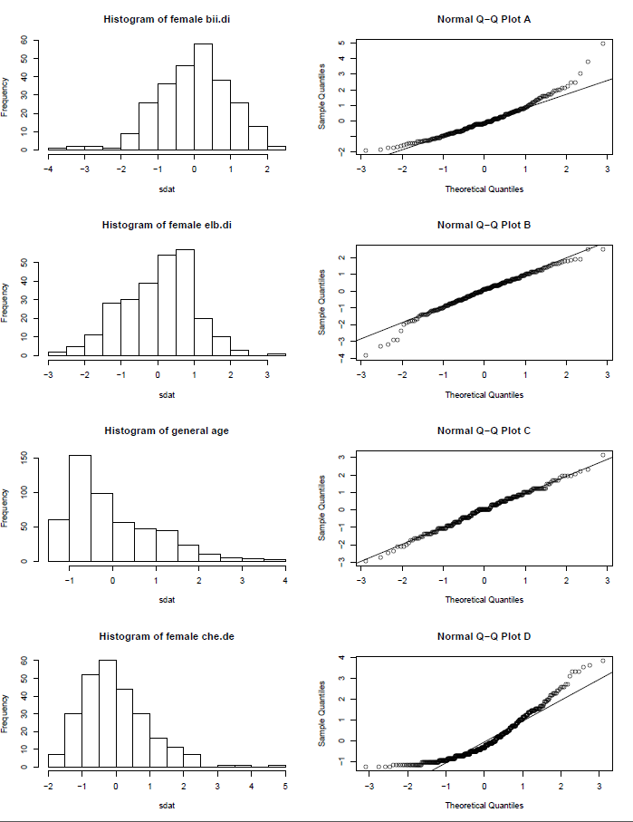

Labs
Instructions. For all of the labs, write up a complete response to each exercise under the lab. If the exercise requires you to write some R code that isn’t explicitly given to you, you should include that R code. If the exercise asks you to generate a plot, include an image of that plot.
Introduction to R and RStudio
The goal of this lab is to introduce you to R and RStudio, which you’ll be using throughout the course both to learn the statistical concepts discussed in the texbook and also to analyze real data and come to informed conclusions. To straighten out which is which: R is the name of the programming language itself and RStudio is a convenient interface.
As the labs progress, you are encouraged to explore beyond what the labs dictate; a willingness to experiment will make you a much better programmer. Before we get to that stage, however, you need to build some basic fluency in R. Today we begin with the fundamental building blocks of R and RStudio: the interface, reading in data, and basic commands.

The panel in the upper right contains your workspace as well as a history of the commands that you’ve previously entered. Any plots that you generate will show up in the panel in the lower right corner.
The panel on the left is where the action happens. It’s called the console. Everytime you launch RStudio, it will have the same text at the top of the console telling you the version of R that you’re running. Below that information is the prompt. As its name suggests, this prompt is really a request, a request for a command. Initially, interacting with R is all about typing commands and interpreting the output. These commands and their syntax have evolved over decades (literally) and now provide what many users feel is a fairly natural way to access data and organize, describe, and invoke statistical computations.
The Data: Arbuthnot’s Baptism Records
Dr Arbuthnot (1667–1735) was a physician, writer, and mathematician. He was interested in the ratio of newborn boys to newborn girls, so he gathered the baptism records for children born in London for every year from 1629 to 1710.
This data is recorded in the arbuthnot.csv file. The
csv extension for “comma-separated values,” and a
csv file is just a plain text file format used to record
data frames. The first line in the file records the variable names
(separated by commas), and then each subsequent row records observations
(again, separated by values). The first few lines in
arbuthnot.csv look like this:
"year","boys","girls"
1629,5218,4683
1630,4858,4457
1631,4422,4102
1632,4994,4590To load the data frame into R, enter the following command into R prompt:
arbuthnot <- read.csv("https://sagrawalx.github.io/teaching/fa21-b1_ma117/labs/arbuthnot.csv")The read.csv function tells R to read the
csv file whose path is provided inside the brackets and
quotes. That path can be a path to a csv file on your
computer (eg, read.csv("~/Downloads/arbuthnot.csv")), or it
can be a path to a csv file on the web like above. The
<- symbol tells R to store the data from that
csv file into a variable called arbuthnot.
You should see that the workspace area in the upper righthand corner of the RStudio window now lists a data frame called arbuthnot that has 82 observations on 3 variables. You can take a look at the data frame by typing its name into the console.
arbuthnotWhat you should see are four columns of numbers, each row representing a different year: the first entry in each row is simply the row number (an index we can use to access the data from individual years if we want), the second is the year, and the third and fourth are the numbers of boys and girls baptized that year, respectively. Use the scrollbar on the right side of the console window to examine the complete data set.
Note that the row numbers in the first column are not part of Arbuthnot’s data. R adds them as part of its printout to help you make visual comparisons. You can think of them as the index that you see on the left side of a spreadsheet. In fact, the comparison to a spreadsheet will generally be helpful. R has stored Arbuthnot’s data in a kind of spreadsheet or table called a data frame.
Some Exploration
You can see the dimensions of this data frame by typing:
dim(arbuthnot)This command should output [1] 82 3, indicating that
there are 82 rows and 3 columns (we’ll get to what the [1]
means in a bit), just as it says next to the object in your workspace.
You can see the names of these columns (or variables) by typing:
names(arbuthnot)You should see that the data frame contains the columns year, boys, and girls. At this point, you might notice that many of the commands in R look a lot like functions from math class; that is, invoking R commands means supplying a function with some number of arguments. The dim and names commands, for example, each took a single argument, the name of a data frame.
One advantage of RStudio is that it comes with a built-in data
viewer. Click on the name arbuthnot in the Environment pane
(upper right window) that lists the objects in your workspace. This will
bring up an alternative display of the data set in the Data Viewer
(upper left window). You can close the data viewer by clicking on the
x in the upper lefthand corner.
Let’s start to examine the data a little more closely. We can access the data in a single column of a data frame separately using a command like
arbuthnot$boysThis command will only show the number of boys baptized each year.
What command would you use to extract just the counts of girls baptized? Try it!
Notice that the way R has printed these data is different. When we
looked at the complete data frame, we saw 82 rows, one on each line of
the display. These data are no longer structured in a table with other
variables, so they are displayed one right after another. Objects that
print out in this way are called vectors; they represent a set
of numbers. R has added numbers in [brackets] along the left side of the
printout to indicate locations within the vector. For example,
5218 follows [1], indicating that
5218 is the first entry in the vector. And if
[43] starts a line, then that would mean the first number
on that line would represent the 43rd entry in the vector.
R has some powerful functions for making graphics. We can create a simple plot of the number of girls baptized per year with the command
plot(x = arbuthnot$year, y = arbuthnot$girls)By default, R creates a scatterplot with each x,y pair indicated by
an open circle. The plot itself should appear under the Plots tab of the
lower right panel of RStudio. Notice that the command above again looks
like a function, this time with two arguments separated by a comma. The
first argument in the plot function specifies the variable for the
x-axis and the second for the y-axis. If we wanted to connect the data
points with lines, we could add a third argument, the letter
l for line.
plot(x = arbuthnot$year, y = arbuthnot$girls, type = "l")You might wonder how you are supposed to know that it was possible to add that third argument. Thankfully, R documents all of its functions extensively. To read what a function does and learn the arguments that are available to you, just type in a question mark followed by the name of the function that you’re interested in. Try the following.
?plotNotice that the help file replaces the plot in the lower right panel. You can toggle between plots and help files using the tabs at the top of that panel.
Is there an apparent trend in the number of girls baptized over the years? How would you describe it?
Now, suppose we want to plot the total number of baptisms. To compute this, we could use the fact that R is really just a big calculator. We can type in mathematical expressions like
5218 + 4683to see the total number of baptisms in 1629. We could repeat this once for each year, but there is a faster way. If we add the vector for baptisms for boys and girls, R will compute all sums simultaneously.
arbuthnot$boys + arbuthnot$girlsWhat you will see are 82 numbers (in that packed display, because we aren’t looking at a data frame here), each one representing the sum we’re after. Take a look at a few of them and verify that they are right. Therefore, we can make a plot of the total number of baptisms per year with the command:
plot(arbuthnot$year, arbuthnot$boys + arbuthnot$girls, type = "l")This time, note that we left out the names of the first two
arguments. We can do this because the help file shows that the default
for plot is for the first argument to be the x-variable and
the second argument to be the y-variable.
Similarly to how we computed the proportion of boys, we can compute the ratio of the number of boys to the number of girls baptized in 1629 with
5218 / 4683or we can act on the complete vectors with the expression
arbuthnot$boys / arbuthnot$girlsThe proportion of newborns that are boys
5218 / (5218 + 4683)or this may also be computed for all years simultaneously:
arbuthnot$boys / (arbuthnot$boys + arbuthnot$girls)Note that with R as with your calculator, you need to be conscious of the order of operations. Here, we want to divide the number of boys by the total number of newborns, so we have to use parentheses. Without them, R will first do the division, then the addition, giving you something that is not a proportion.
Make a plot of the proportion of boys over time. What do you see?
Tip: If you use the up and down arrow keys, you can scroll through your previous commands, your so-called command history. You can also access it by clicking on the history tab in the upper right panel. This will save you a lot of typing in the future.
Finally, in addition to simple mathematical operators like
subtraction and division, you can ask R to make comparisons like greater
than >, less than <, and equality
==. For example, we can ask if boys outnumber girls in each
year with the expression
arbuthnot$boys > arbuthnot$girlsThis command returns 82 values of either TRUE if that
year had more boys than girls, or FALSE if that year did
not (the answer may surprise you). This output shows a different kind of
data than we have considered so far. In the arbuthnot data
frame our values are numerical (the year, the number of boys and girls).
Here, we’ve asked R to create logical data, data where the values are
either TRUE or FALSE. In general, data
analysis will involve many different kinds of data types, and one reason
for using R is that it is able to represent and compute with many of
them.
Another Data Set
The next few exercises involve repeating some of the above steps but for present-day birth records in the United States. These data come from a report by the Centers for Disease Control. Check it out if you would like to read more about an analysis of sex ratios at birth in the United States.
Load up the data frame stored in https://sagrawalx.github.io/teaching/fa21-b1_ma117/labs/present.csv
and store it in a variable called present.
What years are included in this data set? What are the dimensions of the data frame and what are the variable or column names?
How do the birth counts compare to Arbuthnot’s? Are they on a similar scale?
Make a plot that displays the boy-to-girl ratio for every year in the data set. What do you see?
Note: You may be surprised by the result, especially if you’re aware of issues involving sex-selective abortion in some developing countries. You may find it useful to look through this article if you find yourself puzzled.
In what year did we see the most total number of births in the US?
Note: You can refer to the help files or the R reference card to find helpful commands.
Introduction to data
Some define statistics as the field that focuses on turning information into knowledge. The first step in that process is to summarize and describe the raw information — the data. In this lab, you will gain insight into public health by generating simple graphical and numerical summaries of a data set collected by the Centers for Disease Control and Prevention (CDC). As this is a large data set, along the way you’ll also learn the indispensable skills of data processing and subsetting.
Behavioral Risk Factor Surveillance System
The Behavioral Risk Factor Surveillance System (BRFSS) is an annual telephone survey of 350,000 people in the United States. As its name implies, the BRFSS is designed to identify risk factors in the adult population and report emerging health trends. For example, respondents are asked about their diet and weekly physical activity, their HIV/AIDS status, possible tobacco use, and even their level of healthcare coverage. The BRFSS website contains a complete description of the survey, including the research questions that motivate the study and many interesting results derived from the data.
We will focus on a random sample of 20,000 people from the BRFSS
survey conducted in 2000. While there are over 200 variables in this
data set, we will work with a small subset. Load the data set from the
csv file at https://sagrawalx.github.io/teaching/fa21-b1_ma117/labs/cdc.csv:
cdc <- read.csv("https://sagrawalx.github.io/teaching/fa21-b1_ma117/labs/cdc.csv")The data set cdc that shows up in your workspace is a
data matrix, with each row representing a case and each column
representing a variable. R calls this data format a data frame, which is
a term that will be used throughout the labs.
To view the names of the variables, type the command
names(cdc)This returns the names genhlth, exerany,
hlthplan, smoke100, height,
weight, wtdesire, age, and
gender. Each one of these variables corresponds to a
question that was asked in the survey. For example:
- For
genhlth, respondents were asked to evaluate their general health, responding eitherexcellent,very good,good,fairorpoor. - The
exeranyvariable indicates whether the respondent exercised in the past month (1) or did not (0). hlthplanindicates whether the respondent had some form of health coverage (1) or did not (0).- The
smoke100variable indicates whether the respondent had smoked at least 100 cigarettes in her lifetime.
The other variables record the respondent’s height in
inches, weight in pounds as well as their desired weight
wtdesire, age in years, and
gender.
How many cases (ie, observations) are there in this data set? How many variables? Determine whether each variable is categorical or numerical.
We can have a look at the first few entries (rows) of our data with the command
head(cdc)and similarly we can look at the last few by typing
tail(cdc)You could also look at all of the data frame at once by typing its
name into the console, but that might be unwise here. We know
cdc has 20,000 rows, so viewing the entire data set would
mean flooding your screen. It’s better to take small peeks at the data
with head, tail or the subsetting techniques that you’ll learn in a
moment.
Summaries and tables
The BRFSS questionnaire is a massive trove of information. A good first step in any analysis is to distill all of that information into a few summary statistics and graphics. As a simple example, the function summary returns a numerical summary: minimum, first quartile, median, mean, second quartile, and maximum. For weight this is
summary(cdc$weight)R also functions like a very fancy calculator. If you wanted to compute the interquartile range for the respondents’ weights, you would look at the output from the summary command above and then enter
190 - 140R also has built-in functions to compute summary statistics one by one. For instance, to calculate the mean, median, and variance of weight, type
mean(cdc$weight)
var(cdc$weight)
median(cdc$weight)While it makes sense to describe a quantitative variable like weight in terms of these statistics, what about categorical data? We would instead consider the sample frequency or relative frequency distribution. The function table does this for you by counting the number of times each kind of response was given. For example, to see the number of people who have smoked 100 cigarettes in their lifetime, type
table(cdc$smoke100)or instead look at the relative frequency distribution by typing
table(cdc$smoke100)/20000Notice how R automatically divides all entries in the table by 20,000 in the command above. This is similar to something we observed in the lab above, “Introduction to R;” when we multiplied or divided a vector with a number, R applied that action across entries in the vectors. As we see above, this also works for tables. Next, we make a bar plot of the entries in the table by putting the table inside the barplot command.
barplot(table(cdc$smoke100))Notice what we’ve done here! We’ve computed the table of
cdc$smoke100 and then immediately applied the graphical
function, barplot. This is an important idea: R commands can be nested.
You could also break this into two steps by typing the following:
smoke <- table(cdc$smoke100)
barplot(smoke)Here, we’ve made a new object, a table, called smoke (the contents of
which we can see by typing smoke into the console) and then used it in
as the input for barplot. The special symbol <- performs
an assignment, taking the output of one line of code and saving it into
an object in your workspace. This is another important idea that we’ll
return to later.
Create a numerical summary for height and
age, and compute the interquartile range for each. Compute
the relative frequency distribution for gender and
exerany. How many males are in the sample? What proportion
of the sample reports being in excellent health?
The table command can be used to tabulate any number of
variables that you provide. For example, to examine which participants
have smoked across each gender, we could use the
following.
table(cdc$gender,cdc$smoke100)Here, we see column labels of 0 and 1.
Recall that 1 indicates a respondent has smoked at least
100 cigarettes. The rows refer to gender. To create a mosaic plot of
this table, we would enter the following command.
mosaicplot(table(cdc$gender,cdc$smoke100))We could have accomplished this in two steps by saving the table in
one line and applying mosaicplot in the next (see the
table/barplot example above).
What does the mosaic plot reveal about smoking habits and gender?
Interlude: How R thinks about data
We mentioned that R stores data in data frames, which you might think
of as a type of spreadsheet. Each row is a different observation (a
different respondent) and each column is a different variable (the first
is genhlth, the second exerany, and so on). We
can see the size of the data frame next to the object name in the
workspace or we can type
dim(cdc)which will return the number of rows and columns. Now, if we want to access a subset of the full data frame, we can use row-and-column notation. For example, to see the sixth variable of the 567th respondent, use the format
cdc[567,6]which means we want the element of our data set that is in the 567th row (meaning the 567th person or observation) and the 6th column (in this case, weight). We know that weight is the 6th variable because it is the 6th entry in the list of variable names
names(cdc)To see the weights for the first 10 respondents we can type
cdc[1:10,6]In this expression, we have asked just for rows in the range 1
through 10. R uses the : to create a range of values, so
1:10 expands to 1, 2, 3, 4, 5, 6, 7, 8, 9, 10.
You can see this by entering
1:10Finally, if we want all of the data for the first 10 respondents, type
cdc[1:10,]By leaving out an index or a range (we didn’t type anything between the comma and the square bracket), we get all the columns. When starting out in R, this is a bit counterintuitive. As a rule, we omit the column number to see all columns in a data frame. Similarly, if we leave out an index or range for the rows, we would access all the observations, not just the 567th, or rows 1 through 10. Try the following to see the weights for all 20,000 respondents fly by on your screen:
cdc[,6]Recall that column 6 represents respondents’ weight, so the command
above reported all of the weights in the data set. An alternative method
to access the weight data is by referring to the name. Previously, we
typed names(cdc) to see all the variables contained in the
cdc data set. We can use any of the variable names to select items in
our data set.
cdc$weightThe dollar-sign tells R to look in data frame cdc for the column called weight. Since that’s a single vector, we can subset it with just a single index inside square brackets. We see the weight for the 567th respondent by typing
cdc$weight[567]Similarly, for just the first 10 respondents
cdc$weight[1:10]The command above returns the same result as the
cdc[1:10,6] command. Both row-and-column notation and
dollar-sign notation are widely used, which one you choose to use
depends on your personal preference.
A little more on subsetting
It’s often useful to extract all individuals (cases) in a data set that have specific characteristics. We accomplish this through conditioning commands. First, consider expressions like
cdc$gender == "m"or
cdc$age > 30These commands produce a series of TRUE and
FALSE values. There is one value for each respondent, where
TRUE indicates that the person was male (via the first command) or older
than 30 (second command).
Suppose we want to extract just the data for the men in the sample,
or just for those over 30. We can use the R function subset
to do that for us. For example, the command
mdata <- subset(cdc, gender == "m")will create a new data set called mdata that contains
only the men from the cdc data set. In addition to finding
it in your workspace alongside its dimensions, you can take a peek at
the first several rows as usual
head(mdata)This new data set contains all the same variables but just under half the rows. It is also possible to tell R to keep only specific variables, which is a topic we’ll discuss in a future lab. For now, the important thing is that we can carve up the data based on values of one or more variables.
As an aside, you can use several of these conditions together with
& and |. The & is read
“and” so that
m_and_over30 <- subset(cdc, gender == "m" & age > 30)will give you the data for men over the age of 30. The |
character is read “or” so that
m_or_over30 <- subset(cdc, gender == "m" | age > 30)will take people who are men or over the age of 30 or both (why that’s an interesting group is hard to say, but right now the mechanics of this are the important thing). In principle, you may use as many “and” and “or” clauses as you like when forming a subset.
Create a new object called under23_and_smoke that
contains all observations of respondents under the age of 23 that have
smoked 100 cigarettes in their lifetime. Write the command you used to
create the new object as the answer to this exercise.
Quantitative data
With our subsetting tools in hand, we’ll now return to the task of the day: making basic summaries of the BRFSS questionnaire. We’ve already looked at categorical data such as smoke and gender so now let’s turn our attention to quantitative data. Two common ways to visualize quantitative data are with box plots and histograms. We can construct a box plot for a single variable with the following command.
boxplot(cdc$height)You can compare the locations of the components of the box by examining the summary statistics.
summary(cdc$height)Confirm that the median and upper and lower quartiles reported in the numerical summary match those in the graph. The purpose of a boxplot is to provide a thumbnail sketch of a variable for the purpose of comparing across several categories. So we can, for example, compare the heights of men and women with
boxplot(cdc$height ~ cdc$gender)The notation here is new. The ~ character can be read
“versus” or “as a function of.” So we’re asking R to give us a box plots
of heights where the groups are defined by gender.
Next let’s consider a new variable that doesn’t show up directly in this data set: Body Mass Index (BMI). BMI is a weight to height ratio and can be calculated as:
\[ \text{BMI} = 703 \cdot \frac{\text{weight in lbs}}{(\text{height in ins})^2}. \]
Note: The 703 is the approximate conversion factor to change units from metric (meters and kilograms) to US customary (inches and pounds).
The following two lines first make a new object called bmi and then
creates box plots of these values, defining groups by the variable
cdc$genhlth.
bmi <- (cdc$weight / cdc$height^2) * 703
boxplot(bmi ~ cdc$genhlth)Notice that the first line above is just some arithmetic, but it’s applied to all 20,000 numbers in the cdc data set. That is, for each of the 20,000 participants, we take their weight, divide by their height-squared and then multiply by 703. The result is 20,000 BMI values, one for each respondent. This is one reason why we like R: it lets us perform computations like this using very simple expressions.
What does this box plot show? Pick another categorical variable from the data set and see how it relates to BMI. List the variable you chose, why you might think it would have a relationship to BMI, and indicate what the figure seems to suggest.
Finally, let’s make some histograms. We can look at the histogram for the age of our respondents with the command
hist(cdc$age)Histograms are generally a very good way to see the shape of a single
distribution, but that shape can change depending on how the data is
split between the different bins. You can control the number of bins by
adding an argument to the command. In the next two lines, we first make
a default histogram of bmi and then one with 50 breaks.
hist(bmi)
hist(bmi, breaks = 50)Note that you can flip between plots that you’ve created by clicking the forward and backward arrows in the lower right region of RStudio, just above the plots. How do these two histograms compare?
At this point, we’ve done a good first pass at analyzing the information in the BRFSS questionnaire. We’ve found an interesting association between smoking and gender, and we can say something about the relationship between people’s assessment of their general health and their own BMI. We’ve also picked up essential computing tools — summary statistics, subsetting, and plots — that will serve us well throughout this course.
Make a scatterplot of weight versus desired weight. Describe the relationship between these two variables.
Let’s consider a new variable: the difference between desired weight
(wtdesire) and current weight (weight). Create
this new variable by subtracting the two columns in the data frame and
assigning them to a new object called wdiff.
What type of data is wdiff? If an observation
wdiff is 0, what does this mean about the person’s weight
and desired weight? What if wdiff is positive or
negative?
Describe the distribution of wdiff in terms of its
center, shape, and spread, including any plots you use. What does this
tell us about how people feel about their current weight?
Using numerical summaries and a side-by-side box plot, determine if men tend to view their weight differently than women.
Note: You might find it convenient to start by adding a column
corresponding to wdiff to the cdc data frame. To do that,
just type cdc$wdiff <- wdiff.
Now it’s time to get creative. Find the mean and standard deviation of weight, and then determine what proportion of the weights are within one standard deviation of the mean.
Probability
Hot Hands
Basketball players who make several baskets in succession are described as having a hot hand. Fans and players have long believed in the hot hand phenomenon, which refutes the assumption that each shot is independent of the next. However, a 1985 paper by Gilovich, Vallone, and Tversky collected evidence that contradicted this belief and showed that successive shots are independent events (cf. doi:10.1016/0010-0285(85)90010-6). This paper started a great controversy that continues to this day, as you can see by googling hot hand basketball.
We do not expect to resolve this controversy today. However, in this lab we’ll apply one approach to answering questions like this. The goals for this lab are to (1) think about the effects of independent and dependent events, (2) learn how to simulate shooting streaks in R, and (3) to compare a simulation to actual data in order to determine if the hot hand phenomenon appears to be real.
Saving Your Code
Click on File -> New -> R Script. This will open a blank document above the console. As you go along you can copy and paste your code here and save it. This is a good way to keep track of your code and be able to reuse it later. To run your code from this document you can copy and paste it into the console. Alternatively, you can highlight the code and either hit Cmd+Enter (Mac) or Ctrl+Enter (Windows/Linux).
You’ll also want to save this script (code document). To do so click on the disk icon. The first time you hit save, RStudio will ask for a file name; you can name it anything you like. Once you hit save you’ll see the file appear under the Files tab in the lower right panel. You can reopen this file anytime by simply clicking on it.
Getting Started
Our investigation will focus on the performance of one player: Kobe Bryant of the Los Angeles Lakers. His performance against the Orlando Magic in the 2009 NBA finals earned him the title Most Valuable Player and many spectators commented on how he appeared to show a hot hand. Let’s load some data from those games and look at the first several rows.
kobe <- read.csv("https://sagrawalx.github.io/teaching/fa21-b1_ma117/labs/kobe.csv")
head(kobe)In this data frame, every row records a shot taken by Kobe Bryant. If
he hit the shot (made a basket), a hit H is recorded in the
column named basket; otherwise a miss M is
recorded.
Just looking at the string of hits and misses, it can be difficult to gauge whether or not it seems like Kobe was shooting with a hot hand. One way we can approach this is by considering the belief that hot hand shooters tend to go on shooting streaks. For this lab, we define the length of a shooting streak to be the number of consecutive baskets made until a miss occurs.
For example, in Game 1 Kobe had the following sequence of hits and misses from his nine shot attempts in the first quarter:
H M | M | H H M | M | M | M
To verify this use the following command:
kobe$basket[1:9]Within the nine shot attempts, there are six streaks, which are separated by a “|” above. Their lengths are one, zero, two, zero, zero, zero (in order of occurrence).
What does a streak length of 1 mean, i.e. how many hits and misses are in a streak of 1? What about a streak length of 0?
Let’s now define a function, streak_lengths, which will
go take as input a sequence of Hs and Ms (like
kobe$basket). It’ll then output a list of all of the streak
lengths. Copy the following into the console. You don’t need to
understand how this works, but if you’re interested in programming,
you’ll probably enjoy trying to puzzle out what’s going on here.
streak_lengths = function(seq) {
seq <- c("M",as.character(seq),"M")
booleanized <- (seq == "M")
misses <- which(booleanized)
return(diff(misses) - 1)
}Now that this function is defined, we can use it any time we want. Let’s use it to calculate all of Kobe’s streak lengths and make a bar plot.
kobe_streaks <- streak_lengths(kobe$basket)
barplot(table(kobe_streaks))Note that instead of making a histogram, we chose to make a bar plot from a table of the streak data. A bar plot is preferable here since our variable is discrete rather than continuous.
Describe the distribution of Kobe’s streak lengths from the 2009 NBA finals. What was his typical streak length? How long was his longest streak of baskets?
Compared to what?
We’ve shown that Kobe had some long shooting streaks, but are they long enough to support the belief that he had hot hands? What can we compare them to?
To answer these questions, let’s return to the idea of independence. Two processes are independent if the outcome of one process doesn’t effect the outcome of the second. If each shot that a player takes is an independent process, having made or missed your first shot will not affect the probability that you will make or miss your second shot.
A shooter with a hot hand will have shots that are not independent of one another. Specifically, if the shooter makes his first shot, the hot hand model says he will have a higher probability of making his second shot.
Let’s suppose for a moment that the hot hand model is valid for Kobe. During his career, the percentage of time Kobe makes a basket (i.e. his shooting percentage) is about 45%, or in probability notation,
\[ P(\text{shot 1} = \text{H})=0.45 \]
If he makes the first shot and has a hot hand (not independent shots), then the probability that he makes his second shot would go up to, let’s say, 60%,
\[ P(\text{shot 2} = \text{H} \mid \text{shot 1} = \text{H})=0.60 \]
As a result of these increased probabilites, you’d expect Kobe to have longer streaks. Compare this to the skeptical perspective where Kobe does not have a hot hand, where each shot is independent of the next. If he hit his first shot, the probability that he makes the second is still 0.45.
\[ P(\text{shot 2} = \text{H} \mid \text{shot 1} = \text{H})=0.45 \]
In other words, making the first shot did nothing to effect the probability that he’d make his second shot. If Kobe’s shots are independent, then he’d have the same probability of hitting every shot regardless of his past shots: 45%.
Now that we’ve phrased the situation in terms of independent shots, let’s return to the question: how do we tell if Kobe’s shooting streaks are long enough to indicate that he has hot hands? We can compare his streak lengths to someone without hot hands: an independent shooter.
Simulations in R
While we don’t have any data from a shooter we know to have independent shots, that sort of data is very easy to simulate in R. In a simulation, you set the ground rules of a random process and then the computer uses random numbers to generate an outcome that adheres to those rules. As a simple example, you can simulate flipping a fair coin with the following.
outcomes <- c("heads", "tails")
sample(outcomes, size = 1, replace = TRUE)The vector outcomes can be thought of as a hat with two slips of
paper in it: one slip says heads and the other says
tails. The function sample draws one slip from the hat and
tells us if it was a head or a tail.
Run the second command listed above several times. Just like when
flipping a coin, sometimes you’ll get a heads, sometimes
you’ll get a tails, but in the long run, you’d expect to
get roughly equal numbers of each.
If you wanted to simulate flipping a fair coin 100 times, you could
either run the function 100 times or, more simply, adjust the
size argument, which governs how many samples to draw (the
replace = TRUE argument indicates we put the slip of paper
back in the hat before drawing again). Save the resulting vector of
heads and tails in a new object called sim_fair_coin.
sim_fair_coin <- sample(outcomes, size = 100, replace = TRUE)To view the results of this simulation, type the name of the object and then use table to count up the number of heads and tails.
sim_fair_coin
table(sim_fair_coin)Since there are only two elements in outcomes, the probability that we “flip” a coin and it lands heads is 0.5. Say we’re trying to simulate an unfair coin that we know only lands heads 20% of the time. We can adjust for this by adding an argument called prob, which provides a vector of two probability weights.
sim_unfair_coin <- sample(outcomes, size = 100, replace = TRUE, prob = c(0.2, 0.8))prob=c(0.2, 0.8) indicates that for the two elements in
the outcomes vector, we want to select the first one,
heads, with probability 0.2 and the second one,
tails, with probability 0.8. Another way of thinking about
this is to think of the outcome space as a bag of 10 chips, where 2
chips are labeled “head” and 8 chips “tail”. Therefore at each draw, the
probability of drawing a chip that says “head”” is 20%, and “tail” is
80%.
In your simulation of flipping the unfair coin 100 times, how many flips came up heads?
In a sense, we’ve shrunken the size of the slip of paper that says “heads”, making it less likely to be drawn and we’ve increased the size of the slip of paper saying “tails”, making it more likely to be drawn. When we simulated the fair coin, both slips of paper were the same size. This happens by default if you don’t provide a prob argument; all elements in the outcomes vector have an equal probability of being drawn.
If you want to learn more about sample or any other function, recall that you can always check out its help file.
?sampleSimulating the Independent Shooter
Simulating a basketball player who has independent shots uses the same mechanism that we use to simulate a coin flip. To simulate a single shot from an independent shooter with a shooting percentage of 50% we type,
outcomes <- c("H", "M")
sim_basket <- sample(outcomes, size = 1, replace = TRUE)To make a valid comparison between Kobe and our simulated independent shooter, we need to align both their shooting percentage and the number of attempted shots.
What change needs to be made to the sample function so that it
reflects a shooting percentage of 45%? Make this adjustment, then run a
simulation to sample 133 shots. Assign the output of this simulation to
a new object called sim_basket.
Note that we’ve named the new vector sim_basket, the
same name that we gave to the previous vector reflecting a shooting
percentage of 50%. In this situation, R overwrites the old object with
the new one, so always make sure that you don’t need the information in
an old vector before reassigning its name.
Comparing Kobe to the Independent Shooter
With the results of the simulation saved as sim_basket,
we have the data necessary to compare Kobe to our independent shooter.
We can look at Kobe’s data alongside our simulated data.
kobe$basket
sim_basketBoth data sets represent the results of 133 shot attempts, each with the same shooting percentage of 45%. We know that our simulated data is from a shooter that has independent shots. That is, we know the simulated shooter does not have a hot hand.
Using the function streak_lengths, compute the streak
lengths of sim_basket. Describe the distribution of streak
lengths. What is the typical streak length for this simulated
independent shooter with a 45% shooting percentage? How long is the
player’s longest streak of baskets in 133 shots?
If you were to run the simulation of the independent shooter a second time, how would you expect its streak distribution to compare to the distribution from the question above? Exactly the same? Somewhat similar? Totally different? Explain your reasoning.
How does Kobe Bryant’s distribution of streak lengths compare to the distribution of streak lengths for the simulated shooter? Using this comparison, do you have evidence that the hot hand model fits Kobe’s shooting patterns? Explain.
Normal Distribution
In this lab we’ll investigate the probability distribution that is most central to statistics: the normal distribution. If we are confident that our data are nearly normal, that opens the door to many powerful statistical methods. Here we’ll use the graphical tools of R to assess the normality of our data and also learn how to generate random numbers from a normal distribution.
The Data
This week we’ll be working with measurements of body dimensions. This data set contains measurements from 247 men and 260 women, most of whom were considered healthy young adults.
Load the csv file located at https://sagrawalx.github.io/teaching/fa21-b1_ma117/labs/bdims.csv
and then take a quick peek at the first few rows of the data.
bdims <- read.csv("https://sagrawalx.github.io/teaching/fa21-b1_ma117/labs/bdims.csv")
head(bdims)You’ll see that for every observation we have 25 measurements, many
of which are either diameters or girths. A key to the variable names can
be found at http://www.openintro.org/stat/data/bdims.php, but we’ll
be focusing on just three columns to get started: weight in kg
(wgt), height in cm (hgt), and
sex (1 indicates male, 0 indicates female).
Since males and females tend to have different body dimensions, it will be useful to create two additional data sets: one with only men and another with only women.
Since males and females tend to have different body dimensions, it will be useful to create two additional data sets: one with only men and another with only women.
mdims <- subset(bdims, sex == 1)
fdims <- subset(bdims, sex == 0)Make a histogram of men’s heights and a histogram of women’s heights. How would you compare the various aspects of the two distributions?
The Normal Distribution
In your description of the distributions, did you use words like bell-shaped or normal? It’s tempting to say so when faced with a unimodal symmetric distribution.
To see how accurate that description is, we can plot a normal distribution curve on top of a histogram to see how closely the data follow a normal distribution. This normal curve should have the same mean and standard deviation as the data. We’ll be working with women’s heights, so let’s store them as a separate object and then calculate some statistics that will be referenced later.
fhgtmean <- mean(fdims$hgt)
fhgtsd <- sd(fdims$hgt)Next we make a density histogram to use as the backdrop and use the
lines function to overlay a normal probability curve. The
difference between a frequency histogram and a density histogram is that
while in a frequency histogram the heights of the bars add up to the
total number of observations, in a density histogram the areas of the
bars add up to 1. The area of each bar can be calculated as simply the
height times the width of the bar. Using a density histogram allows us
to properly overlay a normal distribution curve over the histogram since
the curve is a normal probability density function. Frequency and
density histograms both display the same exact shape; they only differ
in their y-axis. You can verify this by comparing the frequency
histogram you constructed earlier and the density histogram created by
the commands below.
hist(fdims$hgt, probability = TRUE)
x <- 140:190
y <- dnorm(x = x, mean = fhgtmean, sd = fhgtsd)
lines(x = x, y = y, col = "blue")After plotting the density histogram with the first command, we
create the x- and y-coordinates for the normal curve. We chose the
x range as 140 to 190 in order to span the entire range of
fheight. To create y, we use
dnorm to calculate the density of each of those x-values in
a distribution that is normal with mean fhgtmean and
standard deviation fhgtsd. The final command draws a curve
on the existing plot (the density histogram) by connecting each of the
points specified by x and y. The argument col simply sets
the color for the line to be drawn. If we left it out, the line would be
drawn in black.
The top of the curve is cut off because the limits of the x- and
y-axes are set to best fit the histogram. To adjust the y-axis you can
add a third argument to the histogram function:
ylim = c(0, 0.06).
Based on the this plot, does it appear that the data follow a nearly normal distribution?
Evaluating the Normal Distribution
Eyeballing the shape of the histogram is one way to determine if the data appear to be nearly normally distributed, but it can be frustrating to decide just how close the histogram is to the curve. An alternative approach involves constructing a normal probability plot, also called a normal Q-Q plot for “quantile-quantile.”
qqnorm(fdims$hgt)
qqline(fdims$hgt)A data set that is nearly normal will result in a probability plot where the points closely follow the line. Any deviations from normality leads to deviations of these points from the line. The plot for female heights shows points that tend to follow the line but with some errant points towards the tails. We’re left with the same problem that we encountered with the histogram above: how close is close enough?
A useful way to address this question is to rephrase it as: what do probability plots look like for data that I know came from a normal distribution? We can answer this by simulating data from a normal distribution using rnorm.
sim_norm <- rnorm(n = length(fdims$hgt), mean = fhgtmean, sd = fhgtsd)The first argument indicates how many numbers you’d like to generate,
which we specify to be the same number of heights in the
fdims data set using the length function. The
last two arguments determine the mean and standard deviation of the
normal distribution from which the simulated sample will be generated.
We can take a look at the shape of our simulated data set,
sim_norm, as well as its normal probability plot.
Make a normal probability plot of sim_norm. Do all of
the points fall on the line? How does this plot compare to the
probability plot for the real data?
Even better than comparing the original plot to a single plot generated from a normal distribution is to compare it to many more plots using the following function. Here’s a function which generates nine Q-Q plots at the same time.
qqnormsim <- function (dat) {
par(mfrow = c(3, 3))
qqnorm(dat, main = "Normal QQ Plot (Data)")
qqline(dat)
for (i in 1:8) {
simnorm <- rnorm(n = length(dat), mean = mean(dat),
sd = sd(dat))
qqnorm(simnorm, main = "Normal QQ Plot (Sim)")
qqline(simnorm)
}
par(mfrow = c(1, 1))
}Copy the above into the console, and then use this function to
generate nine Q-Q plots for fdims$hgt as follows. It may be
helpful to click the zoom button in the plot window.
qqnormsim(fdims$hgt)Does the normal probability plot for fdims$hgt look
similar to the plots created for the simulated data? That is, do plots
provide evidence that the female heights are nearly normal?
Using the same technique, determine whether or not female weights appear to come from a normal distribution.
Normal Probabilities
Okay, so now you have a slew of tools to judge whether or not a variable is normally distributed. Why should we care?
It turns out that statisticians know a lot about the normal distribution. Once we decide that a random variable is approximately normal, we can answer all sorts of questions about that variable related to probability. Take, for example, the question of, “What is the probability that a randomly chosen young adult female is taller than 6 feet (about 182 cm)?” (The study that published this data set is clear to point out that the sample was not random and therefore inference to a general population is not suggested. We do so here only as an exercise.)
If we assume that female heights are normally distributed (a very close approximation is also okay), we can find this probability by calculating a Z score and consulting a Z table (also called a normal probability table). In R, this is done in one step with the function pnorm.
1 - pnorm(q = 182, mean = fhgtmean, sd = fhgtsd)Note that the function pnorm gives the area under the
normal curve below a given value, q, with a given mean and
standard deviation. Since we’re interested in the probability that
someone is taller than 182 cm, we have to take one minus that
probability.
Assuming a normal distribution has allowed us to calculate a theoretical probability. If we want to calculate the probability empirically, we simply need to determine how many observations fall above 182 then divide this number by the total sample size.
sum(fdims$hgt > 182) / length(fdims$hgt)Although the probabilities are not exactly the same, they are reasonably close. The closer that your distribution is to being normal, the more accurate the theoretical probabilities will be.
Write out two probability questions that you would like to answer; one regarding female heights and one regarding female weights. Calculate the those probabilities using both the theoretical normal distribution as well as the empirical distribution (four probabilities in all). Which variable, height or weight, had a closer agreement between the two methods?
Now let’s consider some of the other variables in the body dimensions data set. Using the figures below, match the histogram to its normal probability plot. All of the variables have been standardized (first subtract the mean, then divide by the standard deviation), so the units won’t be of any help. If you are uncertain based on these figures, generate the plots in R to check.
- The histogram for female biiliac (pelvic) diameter
(
bii.di) belongs to normal probability plot letter ____. - The histogram for female elbow diameter (
elb.di) belongs to normal probability plot letter ____. - The histogram for general age (
age) belongs to normal probability plot letter ____. - The histogram for female chest depth (
che.de) belongs to normal probability plot letter ____.

As you can see, normal probability plots can be used both to assess
normality and visualize skewness. Make a normal probability plot for
female knee diameter (kne.di). Based on this normal
probability plot, is this variable left skewed, symmetric, or right
skewed? Use a histogram to confirm your findings.
Foundations for statistical inference – Sampling distributions
In this lab, we investigate the ways in which the statistics from a random sample of data can serve as point estimates for population parameters. We’re interested in formulating a sampling distribution of our estimate in order to learn about the properties of the estimate, such as its distribution.
The data
We consider real estate data from the city of Ames, Iowa. The details of every real estate transaction in Ames is recorded by the City Assessor’s office. Our particular focus for this lab will be all residential home sales in Ames between 2006 and 2010. This collection represents our population of interest. In this lab we would like to learn about these home sales by taking smaller samples from the full population. Let’s load the data.
ames <- read.csv("https://sagrawalx.github.io/teaching/fa21-b1_ma117/labs/ames.csv")We see that there are quite a few variables in the data set, enough
to do a very in-depth analysis. For this lab, we’ll restrict our
attention to just two of the variables: the above ground living area of
the house in square feet (Gr.Liv.Area) and the sale price
(SalePrice). To save some effort throughout the lab, create
two variables with short names that represent these two variables.
area <- ames$Gr.Liv.Area
price <- ames$SalePriceLet’s look at the distribution of area in our population of home sales by calculating a few summary statistics and making a histogram.
summary(area)
hist(area)Describe this population distribution.
The unknown sampling distribution
In this lab we have access to the entire population, but this is rarely the case in real life. Gathering information on an entire population is often extremely costly or impossible. Because of this, we often take a sample of the population and use that to understand the properties of the population.
If we were interested in estimating the mean living area in Ames based on a sample, we can use the following command to survey the population.
samp1 <- sample(area, 50)This command collects a simple random sample of size 50 from the
vector area, which is assigned to samp1. This
is like going into the City Assessor’s database and pulling up the files
on 50 random home sales. Working with these 50 files would be
considerably simpler than working with all 2930 home sales.
Describe the distribution of this sample. How does it compare to the distribution of the population?
If we’re interested in estimating the average living area in homes in Ames using the sample, our best single guess is the sample mean.
mean(samp1)Depending on which 50 homes you selected, your estimate could be a bit above or a bit below the true population mean of 1499.69 square feet. In general, though, the sample mean turns out to be a pretty good estimate of the average living area, and we were able to get it by sampling less than 3% of the population.
Take a second sample, also of size 50, and call it
samp2. How does the mean of samp2 compare with
the mean of samp1? Suppose we took two more samples, one of
size 100 and one of size 1000. Which would you think would provide a
more accurate estimate of the population mean?
Not surprisingly, every time we take another random sample, we get a different sample mean. It’s useful to get a sense of just how much variability we should expect when estimating the population mean this way. The distribution of sample means, called the sampling distribution, can help us understand this variability. In this lab, because we have access to the population, we can build up the sampling distribution for the sample mean by repeating the above steps many times. Here we will generate 5000 samples and compute the sample mean of each.
sample_means50 <- rep(NA, 5000)
for(i in 1:5000) {
samp <- sample(area, 50)
sample_means50[i] <- mean(samp)
}
hist(sample_means50)If you would like to adjust the bin width of your histogram to show a little more detail, you can do so by changing the breaks argument.
hist(sample_means50, breaks = 25)Here we use R to take 5000 samples of size 50 from the population,
calculate the mean of each sample, and store each result in a vector
called sample_means50. In the next section, we’ll review
how this set of code works.
How many elements are there in sample_means50? Describe
the sampling distribution, and be sure to specifically note its center.
Would you expect the distribution to change if we instead collected
50,000 sample means?
Interlude: The for
loop
Let’s take a break from the statistics for a moment to let that last
block of code sink in. You have just run your first for
loop, a cornerstone of computer programming. The idea behind the
for loop is iteration: it allows you to execute code as
many times as you want without having to type out every iteration. In
the case above, we wanted to iterate the two lines of code inside the
curly braces that take a random sample of size 50 from area then save
the mean of that sample into the sample_means50 vector.
Without the for loop, this would be painful:
sample_means50 <- rep(NA, 5000)
samp <- sample(area, 50)
sample_means50[1] <- mean(samp)
samp <- sample(area, 50)
sample_means50[2] <- mean(samp)
samp <- sample(area, 50)
sample_means50[3] <- mean(samp)
samp <- sample(area, 50)
sample_means50[4] <- mean(samp)and so on…
With the for loop, these thousands of lines of code are
compressed into a handful of lines. We’ve added one extra line to the
code below, which prints the variable i during each
iteration of the for loop. Run this code.
sample_means50 <- rep(NA, 5000)
for(i in 1:5000) {
samp <- sample(area, 50)
sample_means50[i] <- mean(samp)
print(i)
}Let’s consider this code line by line to figure out what it does. In
the first line we initialized a vector. In this case, we created a
vector of 5000 zeros called sample_means50. This vector
will will store values generated within the for loop.
The second line calls the for loop itself. The syntax
can be loosely read as, “for every element i from 1 to
5000, run the following lines of code.” You can think of i
as the counter that keeps track of which loop you’re on. Therefore, more
precisely, the loop will run once when i = 1, then once
when i = 2, and so on, up to i = 5000.
The body of the for loop is the part inside the curly
braces, and this set of code is run for each value of i.
Here, on every loop, we take a random sample of size 50 from area, take
its mean, and store it as the ith element of
sample_means50.
In order to display that this is really happening, we asked R to
print i at each iteration. This line of code is optional
and is only used for displaying what’s going on while the
for loop is running.
The for loop allows us to not just run the code 5000
times, but to neatly package the results, element by element, into the
empty vector that we initialized at the outset.
To make sure you understand what you’ve done in this loop, try
running a smaller version. Initialize a vector of 100 zeros called
sample_means_small. Run a loop that takes a sample of size
50 from area and stores the sample mean in
sample_means_small, but only iterate from 1 to 100. Print
the output to your screen (type sample_means_small into the
console and press enter). How many elements are there in this object
called sample_means_small? What does each element
represent?
Sample size and the sampling distribution
Mechanics aside, let’s return to the reason we used a
for loop: to compute a sampling distribution, specifically,
this one.
hist(sample_means50)The sampling distribution that we computed tells us much about estimating the average living area in homes in Ames. Because the sample mean is an unbiased estimator, the sampling distribution is centered at the true average living area of the the population, and the spread of the distribution indicates how much variability is induced by sampling only 50 home sales.
To get a sense of the effect that sample size has on our distribution, let’s build up two more sampling distributions: one based on a sample size of 10 and another based on a sample size of 100.
sample_means10 <- rep(NA, 5000)
sample_means100 <- rep(NA, 5000)
for(i in 1:5000) {
samp <- sample(area, 10)
sample_means10[i] <- mean(samp)
samp <- sample(area, 100)
sample_means100[i] <- mean(samp)
}Here we’re able to use a single for loop to build two distributions
by adding additional lines inside the curly braces. Don’t worry about
the fact that samp is used for the name of two different
objects. In the second command of the for loop, the mean of
samp is saved to the relevant place in the vector
sample_means10. With the mean saved, we’re now free to
overwrite the object samp with a new sample, this time of
size 100. In general, anytime you create an object using a name that is
already in use, the old object will get replaced with the new one.
To see the effect that different sample sizes have on the sampling distribution, plot the three distributions on top of one another.
par(mfrow = c(3, 1))
xlimits <- range(sample_means10)
hist(sample_means10, breaks = 20, xlim = xlimits)
hist(sample_means50, breaks = 20, xlim = xlimits)
hist(sample_means100, breaks = 20, xlim = xlimits)The first command specifies that you’d like to divide the plotting
area into 3 rows and 1 column of plots (to return to the default setting
of plotting one at a time, use par(mfrow = c(1, 1))). The
breaks argument specifies the number of bins used in
constructing the histogram. The xlim argument specifies the
range of the x-axis of the histogram, and by setting it equal to
xlimits for each histogram, we ensure that all three
histograms will be plotted with the same limits on the x-axis.
When the sample size is larger, what happens to the center? What about the spread?
So far, we have only focused on estimating the mean living area in homes in Ames. Now you’ll try to estimate the mean home price.
Take a random sample of size 50 from price. Using this sample, what is your best point estimate of the population mean?
Since you have access to the population, simulate the sampling
distribution for \(\bar{x}_{\mathrm{price}}\) by taking 5000
samples from the population of size 50 and computing 5000 sample means.
Store these means in a vector called sample_means50. Plot
the data, then describe the shape of this sampling distribution. Based
on this sampling distribution, what would you guess the mean home price
of the population to be? Finally, calculate and report the population
mean.
Change your sample size from 50 to 150, then compute the sampling
distribution using the same method as above, and store these means in a
new vector called sample_means150. Describe the shape of
this sampling distribution. Based on this sampling distribution, what
would you guess to be the mean sale price of homes in Ames?
Comprea the two sampling distributions from the previous two exercises. Which one has a smaller spread? If we’re concerned with making estimates that are more often close to the true value, would we prefer a distribution with a large or small spread?
Confidence intervals for categorical data
In August of 2012, news outlets ranging from the Washington Post to the Huffington Post ran a story about the rise of atheism in America. The source for the story was a poll that asked people, “Irrespective of whether you attend a place of worship or not, would you say you are a religious person, not a religious person or a convinced atheist?” This type of question, which asks people to classify themselves in one way or another, is common in polling and generates categorical data. In this lab we take a look at the atheism survey and explore what’s at play when making inference about population proportions using categorical data.
The survey
To access the press release for the poll, conducted by WIN-Gallup International, click on the following link: https://github.com/OpenIntroStat/oilabs/raw/master/data-raw/atheism/Global_INDEX_of_Religiosity_and_Atheism_PR__6.pdf
Take a moment to review the report then address the following questions.
In the first paragraph, several key findings are reported. Do these percentages appear to be sample statistics (derived from the data sample) or population parameters?
The title of the report is “Global Index of Religiosity and Atheism.” To generalize the report’s findings to the global human population, what must we assume about the sampling method? Does that seem like a reasonable assumption?
The data
Turn your attention to Table 6 (pages 15 and 16), which reports the sample size and response percentages for all 57 countries. While this is a useful format to summarize the data, we will base our analysis on the original data set of individual responses to the survey. Load this data set into R with the following command.
atheism <- read.csv("https://sagrawalx.github.io/teaching/fa21-b1_ma117/labs/atheism.csv")What does each row of Table 6 correspond to? What does each row of atheism correspond to?
To investigate the link between these two ways of organizing this data, take a look at the estimated proportion of atheists in the United States. Towards the bottom of Table 6, we see that this is 5%. We should be able to come to the same number using the atheism data.
Using the command below, create a new dataframe called us12 that contains only the rows in atheism associated with respondents to the 2012 survey from the United States. Next, calculate the proportion of atheist responses. Does it agree with the percentage in Table 6? If not, why?
us12 <- subset(atheism, nationality == "United States" & year == "2012")Inference on proportions
As was hinted at in Exercise 1, Table 6 provides statistics, that is, calculations made from the sample of 51,927 people. What we’d like, though, is insight into the population parameters. You answer the question, “What proportion of people in your sample reported being atheists?” with a statistic; while the question “What proportion of people on earth would report being atheists?” is answered with an estimate of the parameter.
There are two main inferential tools for estimating population proportions: confidence intervals and hypothesis tests. In this lab, we’ll focus on confidence intervals.
Write out the conditions for inference to construct a 95% confidence interval for the proportion of atheists in the United States in 2012. Are you confident all conditions are met?
Here’s a function that calculates the confidence interval. Copy and
paste the following code into R. (Note that there’s an in-built function
called prop.test that does something similar, but it
computes a different confidence interval than the one we’ve learned in
class! So you should use the following function.)
proportion.ci = function(x, conf.level = 0.95) {
cat("Confidence Level: ", conf.level, "\n")
k <- sum(x)
n <- length(x)
phat <- k/n
cat("Sample Proportion: ", phat, "\n")
se <- sqrt(phat*(1-phat)/n)
cat("Standard Error: ", se, "\n")
zstar <- qnorm(1-(1-conf.level)/2)
cat("Critical Z-Value: ", zstar, "\n")
me <- zstar * se
cat("Margin of Error: ", me, "\n")
cat(conf.level*100, "% Confidence Interval: (", phat-me, ", ", phat+me, ")")
}This code defines a function, proportion.ci, which takes
as input a variable x which contains a list of boolean (ie,
TRUE or FALSE) values. It also takes an
optional argument, conf.level, to represent the confidence
level; this argument defaults to 0.95 if you don’t specify it.
Let’s now use this function to calculate a 95% confidence interval for the proportion of atheists in the US in 2012:
proportion.ci(us12$response == "atheist")What’s going on here? Remember that us12 is a data
frame, one of whose columns is response. The values that
response can take are either atheist or
non-atheist. The command
us12$response == "atheist" goes through each entry of the
column us12$response and outputs TRUE if that
entry is atheist and FALSE otherwise. In other
words, the output of us12$response == "atheist" is a list
of boolean values. We can then feed that list of boolean values into the
proportion.ci function.
Based on the R output, what is the margin of error for the estimate of the proportion of the proportion of atheists in US in 2012? What is the confidence interval?
Note that, since the conf.level argument to
proportion.ci defaults to 0.95, we could also calculate a
95% confidence interval using the proportion.ci function as
follows:
proportion.ci(us12$response == "atheist", conf.level = 0.95)Now use proportion.ci to calculate a 90% confidence
interval for the proportion of atheists in the US in 2012. Is this
confidence interval wider or narrower? Explain why this makes sense.
Calculate 95% confidence intervals for the proportion of atheists in
2012 in two other countries of your choice, and report the associated
margins of error. Be sure to note whether the conditions for inference
are met. It may be helpful to create new data sets for each of the two
countries first, and then use these data sets in the
proportion.ci function to construct the confidence
intervals (just like you did for the US above).
How does the proportion affect the margin of error?
Imagine you’ve set out to survey 1000 people on two questions: are you female? and are you left-handed? Since both of these sample proportions were calculated from the same sample size, they should have the same margin of error, right? Wrong! While the margin of error does change with sample size, it is also affected by the proportion.
Think back to the formula for the standard error: $ =$. This is then used in the formula for the margin of error for a 95% confidence interval: \[\mathrm{ME}=1.96\times \mathrm{SE}=1.96×\sqrt{p(1−p)/n}.\] Since the population proportion \(p\) is in this \(\mathrm{ME}\) formula, it should make sense that the margin of error is in some way dependent on the population proportion. We can visualize this relationship by creating a plot of \(\mathrm{ME}\) vs. \(p\).
The first step is to make a vector p that is a sequence
from 0 to 1 with each number separated by 0.01. We can then create a
vector of the margin of error (me) associated with each of
these values of p using the familiar approximate formula
(\(\mathrm{ME}=2\times \mathrm{SE}\)).
Lastly, we plot the two vectors against each other to reveal their
relationship.
n <- 1000
p <- seq(0, 1, 0.01)
me <- 2 * sqrt(p * (1 - p)/n)
plot(me ~ p, ylab = "Margin of Error", xlab = "Population Proportion")Describe the relationship between p and
me.
Success-failure condition
The textbook emphasizes that you must always check conditions before making inference. For inference on proportions, the sample proportion can be assumed to be nearly normal if it is based upon a random sample of independent observations and if both np≥10 and \(n(1−p)\geq 10\). This rule of thumb is easy enough to follow, but it makes one wonder: what’s so special about the number 10?
The short answer is: nothing. You could argue that we would be fine with 9 or that we really should be using 11. What is the “best” value for such a rule of thumb is, at least to some degree, arbitrary. However, when \(np\) and \(n(1−p)\) reaches 10 the sampling distribution is sufficiently normal to use confidence intervals and hypothesis tests that are based on that approximation.
We can investigate the interplay between \(n\) and \(p\) and the shape of the sampling distribution by using simulations. To start off, we simulate the process of drawing 5000 samples of size 1040 from a population with a true atheist proportion of 0.1. For each of the 5000 samples we compute \(\hat{p}\) and then plot a histogram to visualize their distribution.
p <- 0.1
n <- 1040
p_hats <- rep(0, 5000)
for(i in 1:5000){
samp <- sample(c("atheist", "non_atheist"), n, replace = TRUE, prob = c(p, 1-p))
p_hats[i] <- sum(samp == "atheist")/n
}
hist(p_hats, main = "p = 0.1, n = 1040", xlim = c(0, 0.18))These commands build up the sampling distribution of \(\hat{p}\) using the familiar
for loop. You can read the sampling procedure for the first
line of code inside the for loop as, “take a sample of size
n with replacement from the choices of atheist and non-atheist with
probabilities p and 1−p, respectively.” The
second line in the loop says, “calculate the proportion of atheists in
this sample and record this value.” The loop allows us to repeat this
process 5000 times to build a good representation of the sampling
distribution.
Describe the sampling distribution of sample proportions at \(n=1040\) and \(p=0.1\). Be sure to note the center, spread, and shape. Hint: Remember that R has functions such as mean to calculate summary statistics.
Repeat the above simulation three more times but with modified sample sizes and proportions:
- \(n=400\) and \(p=0.1\),
- \(n=1040\) and \(p=0.02\), and
- \(n=400\) and \(p=0.02\).
Plot all four histograms together by running the
par(mfrow = c(2, 2)) command before creating the
histograms. You may need to expand the plot window to accommodate the
larger two-by-two plot. Describe the three new sampling distributions.
Based on these limited plots, how does n appear to affect the
distribution of \(\hat{p}\)? How does
\(p\) affect the sampling
distribution?
Once you’re done, you can reset the layout of the plotting window by
using the command par(mfrow = c(1, 1)) command or clicking
on “Clear All” above the plotting window (if using RStudio). Note that
the latter will get rid of all your previous plots.
If you refer to Table 6, you’ll find that Australia has a sample proportion of 0.1 on a sample size of 1040, and that Ecuador has a sample proportion of 0.02 on 400 subjects. Let’s suppose for this exercise that these point estimates are actually the truth. Then given the shape of their respective sampling distributions, do you think it is sensible to proceed with inference and report margin of errors, as the reports does?
The question of atheism was asked by WIN-Gallup International in a similar survey that was conducted in 2005. (We assume here that sample sizes have remained the same.) Table 4 on page 13 of the report summarizes survey results from 2005 and 2012 for 39 countries.
Answer the following two questions. As always, write out the hypotheses for any tests you conduct and outline the status of the conditions for inference.
- Is there convincing evidence that Spain has seen a change in its atheism index between 2005 and 2012? Hint: Create a new data set for respondents from Spain. Form confidence intervals for the true proportion of athiests in both years, and determine whether they overlap.
- Is there convincing evidence that the United States has seen a change in its atheism index between 2005 and 2012?
If in fact there has been no change in the atheism index in the countries listed in Table 4, in how many of those countries would you expect to detect a change (at a significance level of 0.05) simply by chance? Hint: Look in the textbook index under Type 1 error.
Suppose you’re hired by the local government to estimate the proportion of residents that attend a religious service on a weekly basis. According to the guidelines, the estimate must have a margin of error no greater than 1% with 95% confidence. You have no idea what to expect for \(p\). How many people would you have to sample to ensure that you are within the guidelines? Hint: Refer to your plot of the relationship between \(p\) and margin of error. Do not use the data set to answer this question.
Confidence intervals for numerical data
Sampling from Ames, Iowa
If you have access to data on an entire population, say the size of every house in Ames, Iowa, it’s straight forward to answer questions like, “How big is the typical house in Ames?” and “How much variation is there in sizes of houses?”. If you have access to only a sample of the population, as is often the case, the task becomes more complicated. What is your best guess for the typical size if you only know the sizes of several dozen houses? This sort of situation requires that you use your sample to make inference on what your population looks like. The data
In a previous lab, we looked at the population data of houses from Ames, Iowa. Let’s start by loading that data set.
ames <- read.csv("https://sagrawalx.github.io/teaching/fa21-b1_ma117/labs/ames.csv")In this lab we’ll start with a simple random sample of size 60 from
the population. Specifically, this is a simple random sample of size 60.
Note that the data set has information on many housing variables, but
for the first portion of the lab we’ll focus on the size of the house,
represented by the variable Gr.Liv.Area.
population <- ames$Gr.Liv.Area
samp <- sample(population, 60)Describe the distribution of your sample. What would you say is the “typical” size within your sample? Also state precisely what you interpreted “typical” to mean.
Would you expect another student’s distribution to be identical to yours? Would you expect it to be similar? Why or why not?
Confidence intervals
One of the most common ways to describe the typical or central value of a distribution is to use the mean. In this case we can calculate the mean of the sample using,
sample_mean <- mean(samp)Return for a moment to the question that first motivated this lab:
based on this sample, what can we infer about the population? Based only
on this single sample, the best estimate of the average living area of
houses sold in Ames would be the sample mean, usually denoted as \(\bar{x}\) (here we’re calling it
sample_mean). That serves as a good point estimate but it
would be useful to also communicate how uncertain we are of that
estimate. This can be captured by using a confidence interval.
We can calculate a 95% confidence interval for a sample mean by adding and subtracting 1.96 standard errors to the point estimate.
se <- sd(samp) / sqrt(60)
lower <- sample_mean - 1.96 * se
upper <- sample_mean + 1.96 * se
c(lower, upper)This is an important inference that we’ve just made: even though we don’t know what the full population looks like, we’re 95% confident that the true average size of houses in Ames lies between the values lower and upper. There are a few conditions that must be met for this interval to be valid.
For the confidence interval to be valid, the sample mean must be normally distributed and have standard error \(s/\sqrt{n}\). What conditions must be met for this to be true?
Confidence levels
What does “95% confidence” mean?
In this case we have the luxury of knowing the true population mean since we have data on the entire population. This value can be calculated using the following command:
mean(population)Does your confidence interval capture the true average size of houses in Ames?
All of your classmates should have gotten a slightly different confidence interval. What proportion of those intervals would you expect to capture the true population mean? Why?
Using R, we’re going to recreate many samples to learn more about how sample means and confidence intervals vary from one sample to another. Loops come in handy here! Here is the rough outline:
- Obtain a random sample.
- Calculate and store the sample’s mean and standard deviation.
- Repeat steps (1) and (2) 50 times.
- Use these stored statistics to calculate many confidence intervals.
But before we do all of this, we need to first create empty vectors
where we can save the means and standard deviations that will be
calculated from each sample. And while we’re at it, let’s also store the
desired sample size as n.
samp_mean <- rep(NA, 50)
samp_sd <- rep(NA, 50)
n <- 60Now we’re ready for the loop where we calculate the means and standard deviations of 50 random samples.
for(i in 1:50){
samp <- sample(population, n)
samp_mean[i] <- mean(samp)
samp_sd[i] <- sd(samp)
}Lastly, we construct the confidence intervals.
lower_vector <- samp_mean - 1.96 * samp_sd / sqrt(n)
upper_vector <- samp_mean + 1.96 * samp_sd / sqrt(n)Lower bounds of these 50 confidence intervals are stored in
lower_vector, and the upper bounds are in
upper_vector. Let’s view the first interval.
c(lower_vector[1], upper_vector[1])Here’s some code for plotting many confidence intervals and highlighting the ones that don’t contain the true population meaan. It’s lengthy and not terribly important to understand.
contains <- function(lo, hi, m) {
if(m>= lo & m <= hi) return(TRUE)
else return(FALSE)
}
plot_ci <- function(lo, hi, m) {
par(mar=c(2, 1, 1, 1), mgp=c(2.7, 0.7, 0))
k <- 50
ci.max <- max(rowSums(matrix(c(-1*lo,hi),ncol=2)))
xR <- m + ci.max*c(-1, 1)
yR <- c(0, 41*k/40)
plot(xR, yR, type='n', xlab='', ylab='', axes=FALSE)
abline(v=m, lty=2, col='#00000088')
axis(1, at=m, paste("mu = ",round(m,4)), cex.axis=1.15)
#axis(2)
for(i in 1:k){
x <- mean(c(hi[i],lo[i]))
ci <- c(lo[i],hi[i])
if(contains(lo[i],hi[i],m)==FALSE){
col <- "#F05133"
points(x, i, cex=1.4, col=col)
# points(x, i, pch=20, cex=1.2, col=col)
lines(ci, rep(i, 2), col=col, lwd=5)
}
col <- 1
points(x, i, pch=20, cex=1.2, col=col)
lines(ci, rep(i, 2), col=col)
}
}After copying the above into the console, you can run it as follows:
plot_ci(lower_vector, upper_vector, mean(population))What proportion of your confidence intervals include the true population mean? Is this proportion exactly equal to the confidence level? If not, explain why.
Pick a confidence level of your choosing, provided it is not 95%. What is the appropriate critical value?
Calculate 50 confidence intervals at the confidence level you chose
in the previous question. You do not need to obtain new samples, simply
calculate new intervals based on the sample means and standard
deviations you have already collected. Using the plot_ci
function again, plot all intervals and calculate the proportion of
intervals that include the true population mean. How does this
percentage compare to the confidence level selected for the
intervals?
Inference for numerical data
North Carolina births
In 2004, the state of North Carolina released a large data set containing information on births recorded in this state. This data set is useful to researchers studying the relation between habits and practices of expectant mothers and the birth of their children. We will work with a random sample of observations from this data set.
Exploratory analysis
Load the nc data set into our workspace.
nc <- read.csv("https://sagrawalx.github.io/teaching/fa21-b1_ma117/labs/nc.csv")We have observations on 13 different variables, some categorical and some numerical. The meaning of each variable is as follows.
| variable | description |
|---|---|
fage |
father’s age in years. |
mage |
mother’s age in years. |
mature |
maturity status of mother. |
weeks |
length of pregnancy in weeks. |
premie |
whether the birth was classified as
premature (premie) or full-term. |
visits |
number of hospital visits during `pregnancy |
marital |
whether mother is married or not married at birth |
gained |
weight gained by mother during pregnancy in pounds |
weight |
weight of the baby at birth in pounds |
lowbirthweight |
whether baby was classified as low
birthweight (low) or not (not low). |
gender |
gender of the baby, female or
male |
habit |
status of the mother as a
nonsmoker or a smoker |
whitemom |
whether mom is white or
not white |
What are the observations in this data frame? How many observations are there in our sample?
As a first step in the analysis, we should consider summaries of the data. This can be done using the summary command:
summary(nc)As you review the variable summaries, consider which variables are categorical and which are numerical. For numerical variables, are there outliers? If you aren’t sure or want to take a closer look at the data, make a graph.
Consider the possible relationship between a mother’s smoking habit and the weight of her baby. Plotting the data is a useful first step because it helps us quickly visualize trends, identify strong associations, and develop research questions.
Make a side-by-side boxplot of habit and
weight. What does the plot highlight about the relationship
between these two variables?
The box plots show how the medians of the two distributions compare, but we can also compare the means of the distributions using the following function to split the weight variable into the habit groups, then take the mean of each using the mean function.
by(nc$weight, nc$habit, mean)There is an observed difference, but is this difference statistically significant? In order to answer this question we will conduct a hypothesis test.
Check if the conditions necessary for inference are satisfied. Note that you will need to obtain sample sizes to check the conditions. You can compute the group size using the same by command above but replacing mean with length.
Write the hypotheses for testing if the average weights of babies born to smoking and non-smoking mothers are different.
We’ll now use the R function t.test to run a \(t\)-test for testing the hypothesis \(H_0\) that \(\mu_{\text{smoker}} - \mu_{\text{nonsmoker}} =
0\), where \(\mu_{\text{smoker}}\) is the mean weight of
babies born to smoking mothers and \(\mu_{\text{nonsmoker}}\) is the mean weight
of babies born to nonsmoking mothers.
t.test(nc$weight ~ nc$habit)What is the \(p\)-value of the \(t\)-test? What does this \(p\)-value mean?
Note: I’m asking you to interpret the \(p\)-value as a probability (not to make a final conclusion about whether to reject or not reject \(H_0\) based on the \(p\)-value).
What is a 95% confidence interval for \(\mu_{\text{smoker}} - \mu_{\text{nonsmoker}}\)?
Note: Be careful about signs! The t.test function
outputs a confidence interval for either \(\mu_{\text{smoker}} -
\mu_{\text{nonsmoker}}\) or \(\mu_{\text{nonsmoker}} -
\mu_{\text{smoker}}\). Which is it?
You can also use t.test for a single numerical variable.
For example, weeks is the variable recording the length of
the pregnancy. Run the following:
t.test(nc$weeks) What is the 95% confidence interval for the average length of pregnancies? Interpret it in context.
Calculate a new confidence interval for the same parameter at the 90%
confidence level. You can change the confidence level by adding a new
argument to the function: conf.level = 0.90.
Conduct a hypothesis test evaluating whether the average weight gained by younger mothers is different than the average weight gained by mature mothers.
Now, a non-inference task: Determine the age cutoff that was used in this study for younger and mature mothers. Use a method of your choice, and explain how your method works.
Pick a pair of variables (one binary, one numerical) in this data set
and come up with a research question evaluating the relationship between
these variables. Formulate the question in a way that it can be answered
using a hypothesis test and/or a confidence interval. Answer your
question using the t.test function, report the statistical
results, and also provide an explanation in plain language.
Introduction to linear regression
Batter up
The movie Moneyball focuses on the “quest for the secret of success in baseball.” It follows a low-budget team, the Oakland Athletics, who believed that underused statistics, such as a player’s ability to get on base, betterpredict the ability to score runs than typical statistics like home runs, RBIs (runs batted in), and batting average. Obtaining players who excelled in these underused statistics turned out to be much more affordable for the team.
In this lab we’ll be looking at data from all 30 Major League Baseball teams and examining the linear relationship between runs scored in a season and a number of other player statistics. Our aim will be to summarize these relationships both graphically and numerically in order to find which variable, if any, helps us best predict a team’s runs scored in a season. The data
Let’s load up the data for the 2011 season.
mlb11 <- read.csv("https://sagrawalx.github.io/teaching/fa21-b1_ma117/labs/mlb11.csv")In addition to runs scored, there are seven
traditionally used variables in the data set: at-bats, hits, home runs,
batting average, strikeouts, stolen bases, and wins. There are also
three newer variables: on-base percentage, slugging percentage, and
on-base plus slugging. For the first portion of the analysis we’ll
consider the seven traditional variables. At the end of the lab, you’ll
work with the newer variables on your own.
What type of plot would you use to display the relationship between
runs and one of the other numerical variables? Plot this relationship
using the variable at_bats as the predictor. Does the
relationship look linear? If you knew a team’s at_bats,
would you be comfortable using a linear model to predict the number of
runs?
If the relationship looks linear, we can quantify the strength of the relationship with the correlation coefficient.
cor(mlb11$runs, mlb11$at_bats)Think back to the way that we described the distribution of a single
variable. Recall that we discussed characteristics such as center,
spread, and shape. It’s also useful to be able to describe the
relationship of two numerical variables, such as runs and
at_bats above.
Looking at your plot from the previous exercise, describe the relationship between these two variables. Make sure to discuss the form, direction, and strength of the relationship as well as any unusual observations.
The linear model
We can use the lm function in R to fit the linear model
(a.k.a. regression line).
m1 <- lm(runs ~ at_bats, data = mlb11)The first argument in the function lm is a formula that takes the
form y ~ x. Here it can be read that we want to make a
linear model of runs as a function of at_bats. The second
argument specifies that R should look in the mlb11 data
frame to find the runs and at_bats
variables.
The output of lm is an object that contains all of the
information we need about the linear model that was just fit. We can
access this information using the summary function.
summary(m1)Let’s consider this output piece by piece. First, the formula used to describe the model is shown at the top. After the formula you find the five-number summary of the residuals. The “Coefficients” table shown next is key; its first column displays the linear model’s y-intercept and the coefficient of at_bats. With this table, we can write down the least squares regression line for the linear model:
\[ \widehat{\mathrm{runs}} = −2789.2429 + 0.6305 \times \mathrm{at\_bats} \]
One last piece of information we will discuss from the summary output is the Multiple R-squared, or more simply, \(R^2\). The \(R^2\) value represents the proportion of variability in the response variable that is explained by the explanatory variable. For this model, 37.3% of the variability in runs is explained by at-bats.
Fit a new model that uses homeruns to predict
runs. Using the estimates from the R output, write the
equation of the regression line. What does the slope tell us in the
context of the relationship between success of a team and its home
runs?
Prediction and prediction errors
Let’s create a scatterplot with the least squares line laid on top.
plot(mlb11$runs ~ mlb11$at_bats)
abline(m1)The function abline plots a line based on its slope and
intercept. Here, we used a shortcut by providing the model
m1, which contains both parameter estimates. This line can
be used to predict \(y\) at any value
of \(x\). When predictions are made for
values of \(x\) that are beyond the
range of the observed data, it is referred to as extrapolation and is
not usually recommended. However, predictions made within the range of
the data are more reliable. They’re also used to compute the
residuals.
If a team manager saw the least squares regression line and not the actual data, how many runs would he or she predict for a team with 5579 at-bats? Is this an overestimate or an underestimate, and by how much? In other words, what is the residual for this prediction?
Model diagnostics
To assess whether the linear model is reliable, we need to check for (1) linearity, (2) nearly normal residuals, and (3) constant variability.
Linearity: You already checked if the relationship between runs and at-bats is linear using a scatterplot. We should also verify this condition with a plot of the residuals vs. at-bats. Recall that any code following a # is intended to be a comment that helps understand the code but is ignored by R.
plot(m1$residuals ~ mlb11$at_bats)
abline(h = 0, lty = 3) # adds a horizontal dashed line at y = 0Is there any apparent pattern in the residuals plot? What does this indicate about the linearity of the relationship between runs and at-bats?
Nearly normal residuals: To check this condition, we can look at a histogram
hist(m1$residuals)or a normal probability plot of the residuals.
qqnorm(m1$residuals)
qqline(m1$residuals) # adds diagonal line to the normal prob plotBased on the histogram and the normal probability plot, does the nearly normal residuals condition appear to be met?
Constant variability:
Based on the plot in (1), does the constant variability condition appear to be met?
Choose another traditional variable from mlb11 that you
think might be a good predictor of runs. Produce a
scatterplot of the two variables and fit a linear model. At a glance,
does there seem to be a linear relationship?
How does this relationship compare to the relationship between runs
and at_bats? Use the \(R^2\) values
from the two model summaries to compare. Does your variable seem to
predict runs better than at_bats? How can you
tell?
Now that you can summarize the linear relationship between two variables, investigate the relationships between runs and each of the other five traditional variables. Which variable best predicts runs? Support your conclusion using the graphical and numerical methods we’ve discussed (for the sake of conciseness, only include output for the best variable, not all five).
Now examine the three newer variables. These are the statistics used by the author of Moneyball to predict a teams success. In general, are they more or less effective at predicting runs that the old variables? Explain using appropriate graphical and numerical evidence. Of all ten variables we’ve analyzed, which seems to be the best predictor of runs? Using the limited (or not so limited) information you know about these baseball statistics, does your result make sense?
Check the model diagnostics for the regression model with the variable you decided was the best predictor for runs.